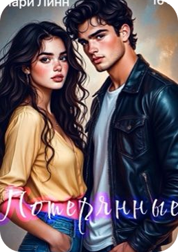
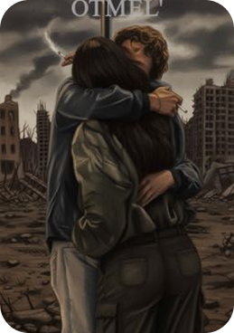
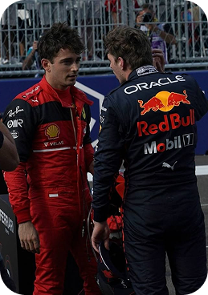
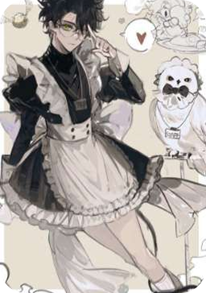

Она стояла на автобусной остановке, когда рядом остановился черный BMW. Водитель как ни в чем не бывало подошел к другой машине...

Вернуться на семь лет назад, чтобы узнать тайну свихнувшегося бойца спецназа, жестоко вырезавшего це...

В продолжении книги «Несбывшиеся» мы узнаем, что стало с уже известными нам героями Матвеем и Анной...
Мирэй Армант- она была директором по развитию банковских проектов: должность, за которой скрывалась...
> Две сестры-близнеца, наследницы старинной династии, родились с золотой ложкой во рту. Но Токио не...

2032 г. Вирус не просто убил мир - он заразил саму надежду. Он превратил миллиарды людей в мутантов...
Что если у Максима была бы подруга, с которой они общаются с детства? А если эта дружба перерастёт в...

2032 г. Вирус не просто убил мир - он заразил саму надежду. Он превратил миллиарды людей в мутантов...
Вот вам юмора немного ^-^

Это просто отдельная мини-история, чтобы посмеяться от души, приятного чтения 😘😂 всего одна часть